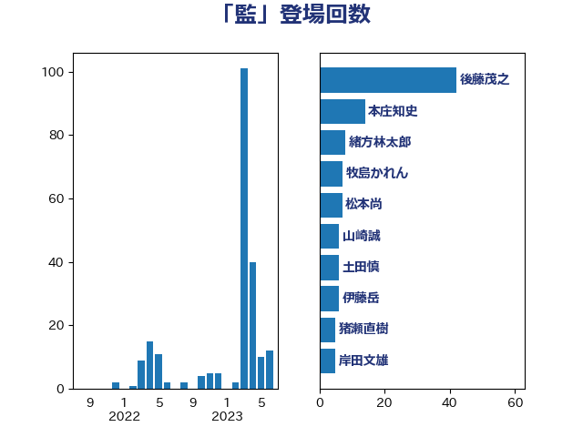

単語「監」

| 後藤茂之 | 自由民主党 | 42 回 |
| 本庄知史 | 立憲民主党 | 14 回 |
| 緒方林太郎 | 無所属 | 8 回 |
| 牧島かれん | 自由民主党 | 7 回 |
| 松本尚 | 自由民主党 | 7 回 |
| 山崎誠 | 立憲民主党 | 6 回 |
| 土田慎 | 自由民主党 | 6 回 |
| 伊藤岳 | 日本共産党 | 6 回 |
| 猪瀬直樹 | 日本維新の会 | 5 回 |
| 岸田文雄 | 自由民主党 | 5 回 |
| 小野寺五典 | 自由民主党 | 4 回 |
| 塩川鉄也 | 日本共産党 | 4 回 |
| 三浦信祐 | 公明党 | 4 回 |
| 青柳仁士 | 日本維新の会 | 3 回 |
| 杉尾秀哉 | 立憲民主党 | 3 回 |
| 山岸一生 | 立憲民主党 | 3 回 |
| 加藤勝信 | 自由民主党 | 3 回 |
| 高良鉄美 | 無所属 | 2 回 |
| 高市早苗 | 自由民主党 | 2 回 |
| 阿部知子 | 立憲民主党 | 2 回 |
| 阿部弘樹 | 日本維新の会 | 2 回 |
| 鈴木義弘 | 国民民主党 | 2 回 |
| 谷田川元 | 立憲民主党 | 2 回 |
| 櫻井周 | 立憲民主党 | 2 回 |
| 末松信介 | 自由民主党 | 2 回 |
| 川田龍平 | 立憲民主党 | 2 回 |
| 岩渕友 | 日本共産党 | 2 回 |
| 小沼巧 | 立憲民主党 | 2 回 |
| 奥下剛光 | 日本維新の会 | 2 回 |
| 塩田博昭 | 公明党 | 2 回 |
| 音喜多駿 | 日本維新の会 | 1 回 |
| 野間健 | 立憲民主党 | 1 回 |
| 野田国義 | 立憲民主党 | 1 回 |
| 遠藤良太 | 日本維新の会 | 1 回 |
| 辻元清美 | 立憲民主党 | 1 回 |
| 足立敏之 | 自由民主党 | 1 回 |
| 藤井比早之 | 自由民主党 | 1 回 |
| 磯崎仁彦 | 自由民主党 | 1 回 |
| 田村まみ | 国民民主党 | 1 回 |
| 片山さつき | 自由民主党 | 1 回 |
| 河野太郎 | 自由民主党 | 1 回 |
| 水野素子 | 立憲民主党 | 1 回 |
| 柳ヶ瀬裕文 | 日本維新の会 | 1 回 |
| 東徹 | 日本維新の会 | 1 回 |
| 有村治子 | 自由民主党 | 1 回 |
| 早稲田ゆき | 立憲民主党 | 1 回 |
| 斉藤鉄夫 | 公明党 | 1 回 |
| 岩谷良平 | 日本維新の会 | 1 回 |
| 岡田直樹 | 自由民主党 | 1 回 |
| 山口俊一 | 自由民主党 | 1 回 |
| 小山展弘 | 立憲民主党 | 1 回 |
| 宮路拓馬 | 自由民主党 | 1 回 |
| 太栄志 | 立憲民主党 | 1 回 |
| 大西健介 | 立憲民主党 | 1 回 |
| 吉川沙織 | 立憲民主党 | 1 回 |
| 仁木博文 | 無所属 | 1 回 |
| 井上哲士 | 日本共産党 | 1 回 |
| 中谷一馬 | 立憲民主党 | 1 回 |